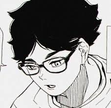
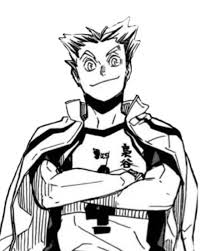
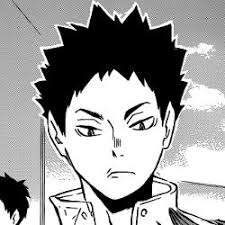
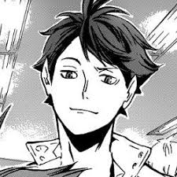
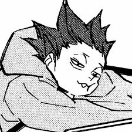
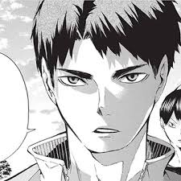
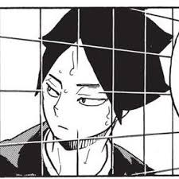
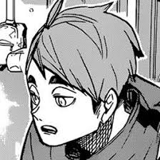

Akaashi
Atual editor de mangá na famosa revista Weekly Shōnen Jump.

Atual editor de mangá na famosa revista Weekly Shōnen Jump.

Atual jogador profissional de vôlei. Ele é o ace e capitão do MSBY Black Jackals

Atual treinador esportivo. Ele estudou ciências do esporte nos Estados Unidos.

Atual jogador profissional de vôlei.

Atual chocolatier na confeitaria LIONCEAU. Após se aposentar do vôlei profissional

Jogador profissional de vôlei. Atua como atacante, além de defender a Seleção Japonesa

Atual jogador profissional de vôlei. Ele atua como bloqueador de meio de rede.

Atual fundador e proprietário de seu próprio restaurante de sucesso chamado Onigiri Miya